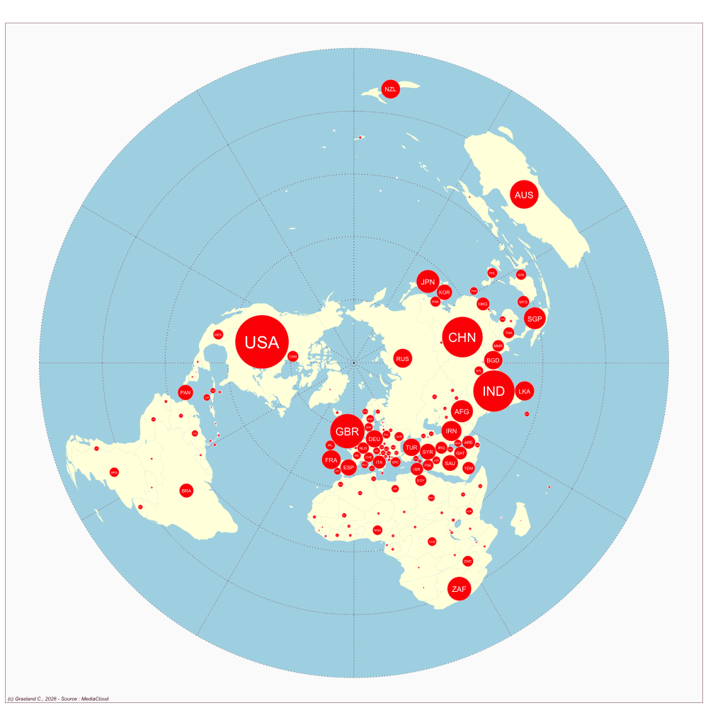

Pakistan
- Website : The News (Pakistan)
Scale
- Global
- National
Topics
- General news
- Political news
- Economic news
Publications
Ittefaq M, Ejaz W, Fahmy SS, Sheikh AM. 2021. Converged journalism: Practices and influences in pakistan. Media International Australia 181: 167–182